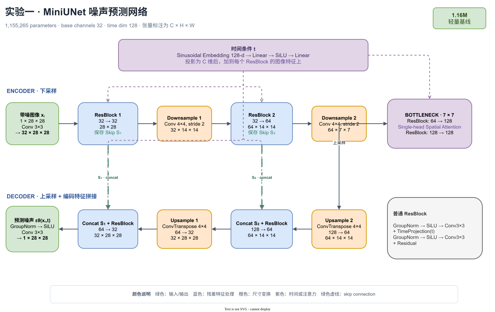
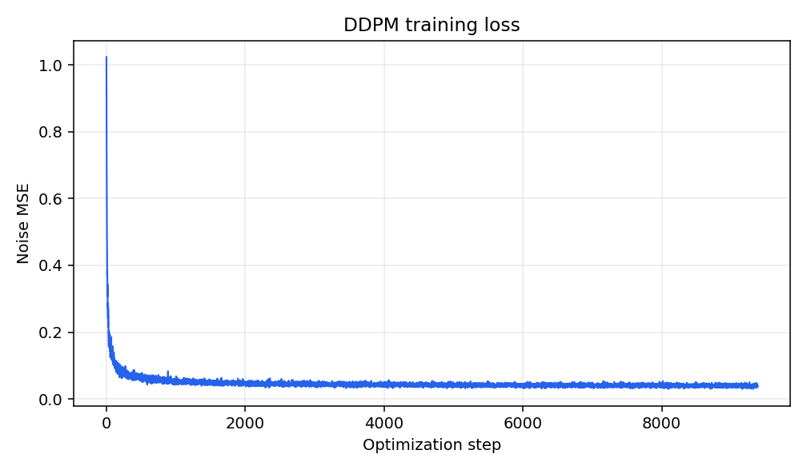
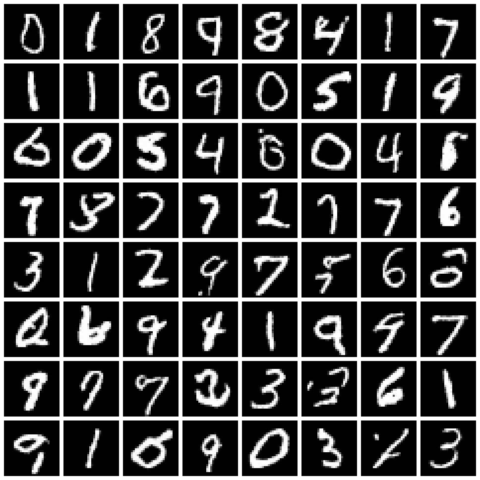
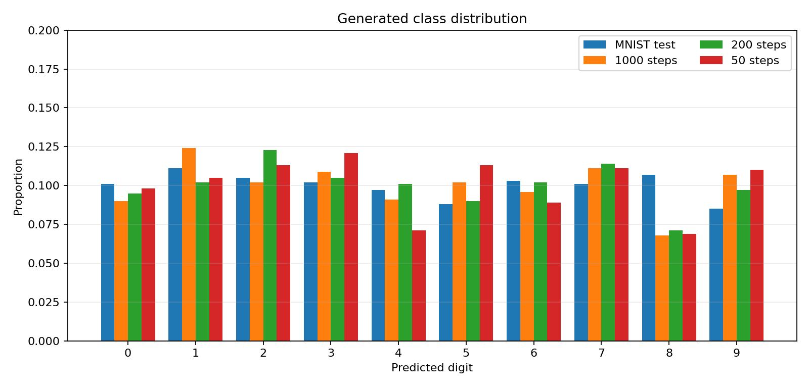
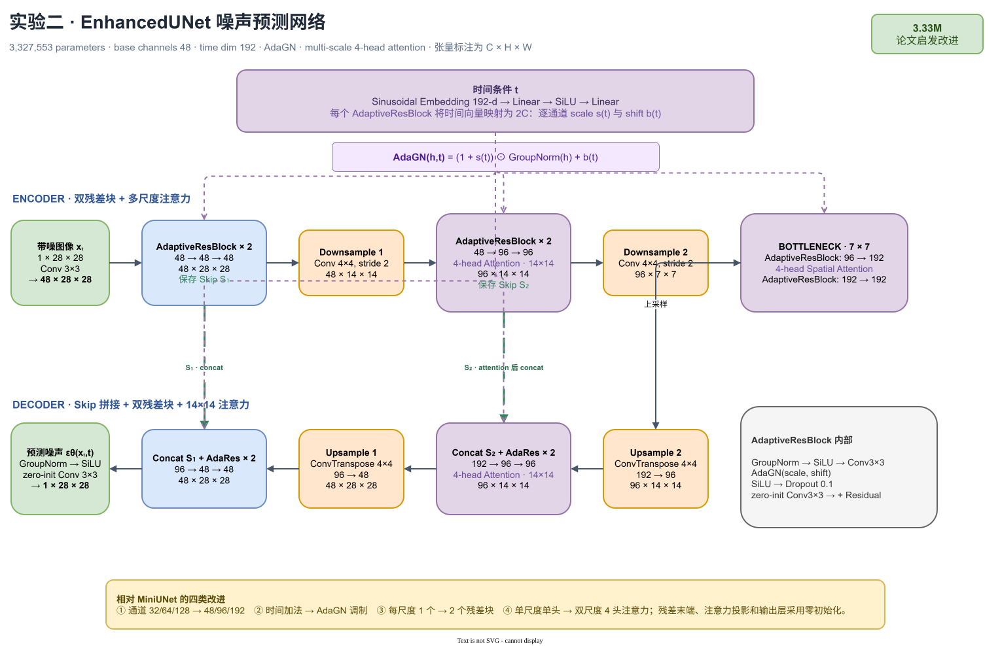
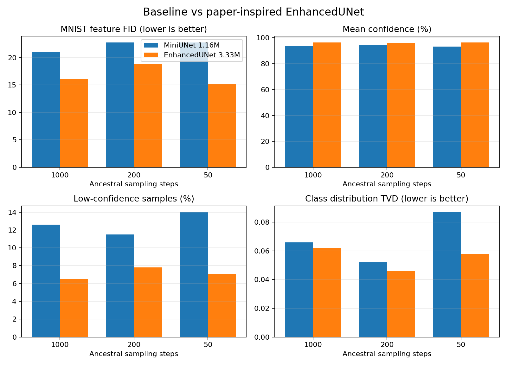
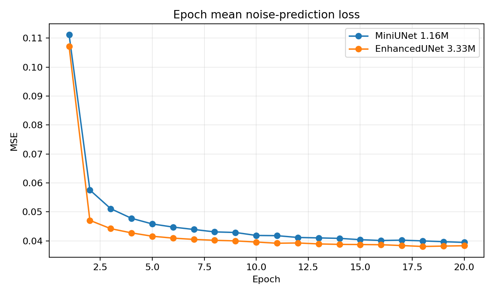
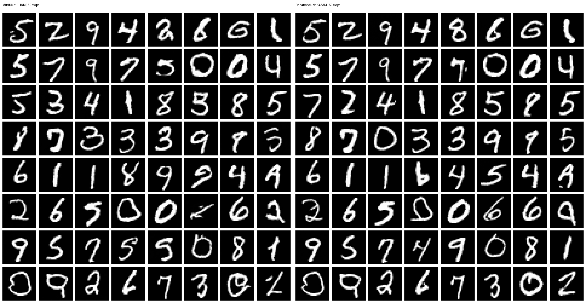
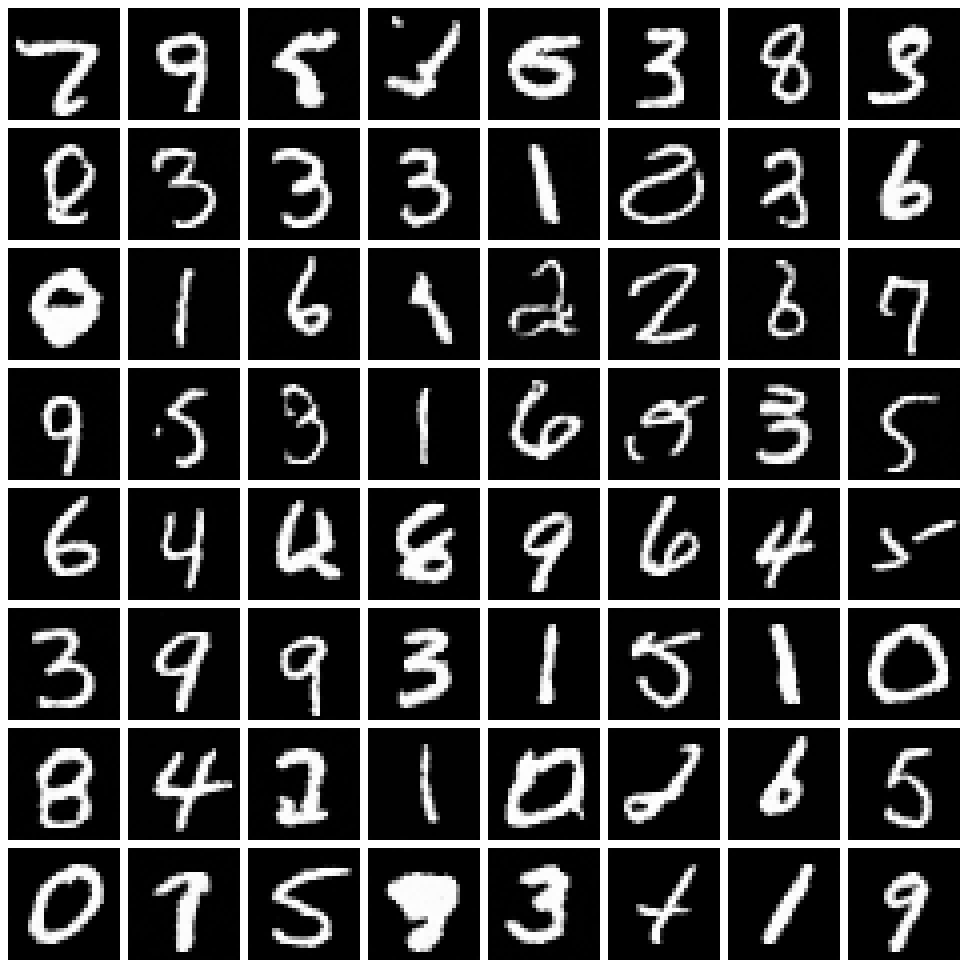
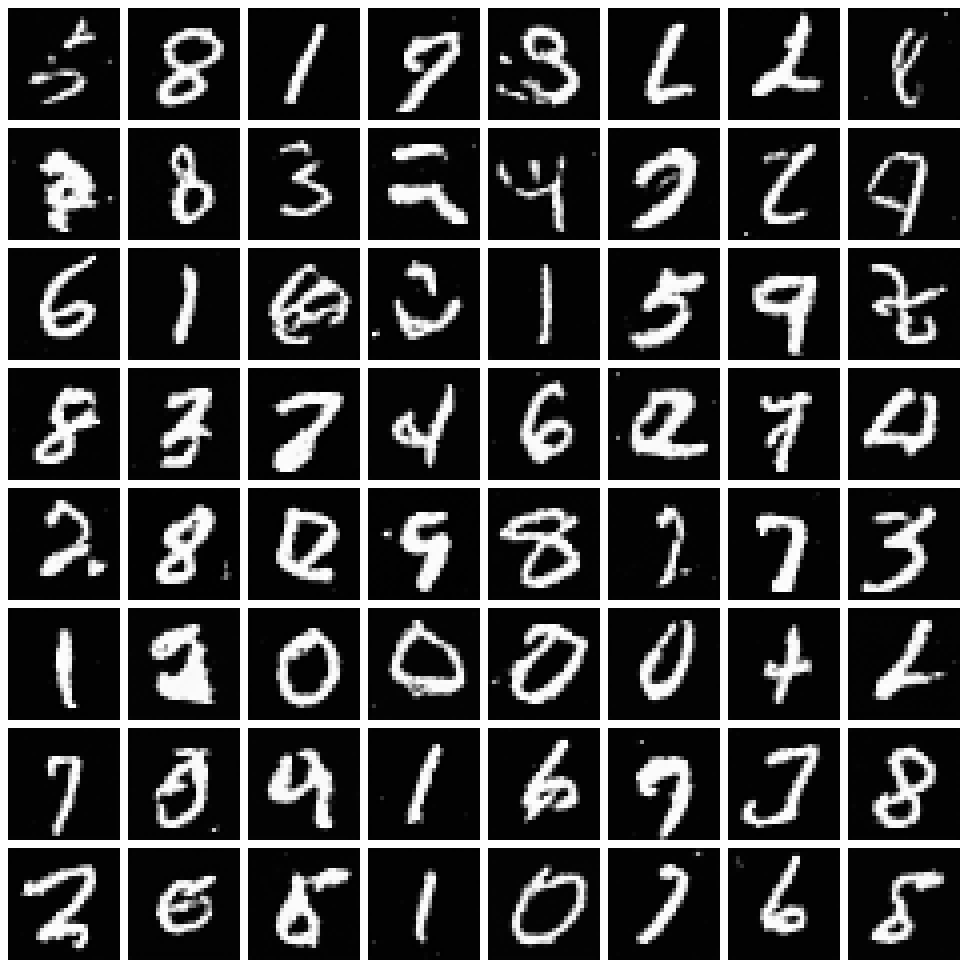

前向加噪
余弦调度平滑控制信噪比，并通过闭式公式直接得到任意 xₜ。
Programming Assignment · 02
在 MNIST 上从零实现迷你 DDPM，并参考扩散模型论文设计 3.33M 参数增强网络：从前向加噪、时间条件 U-Net 和 EMA 训练，到步数与模型结构的受控对比。
01 · Method
训练阶段学习每个时间步中的高斯噪声；生成阶段从纯噪声出发，使用模型反复估计干净图像并向前一状态移动。
余弦调度平滑控制信噪比，并通过闭式公式直接得到任意 xₜ。
时间嵌入告诉 U-Net 当前噪声等级，以 MSE 学习 ε。
使用 EMA 网络和广义 posterior，支持完整或压缩时间轴。
GroupNorm → SiLU → Conv3×3 → + TimeProjection → GroupNorm → SiLU → Conv3×3 → + Residual
02 · Training
60,000 张训练图像，batch size 128，AdamW 学习率 2×10⁻⁴，20 epochs。EMA 衰减为 0.999，CUDA 自动混合精度开启。

03 · Benchmark
三组 ancestral 实验使用同一 checkpoint、64 个样本、seed 123 和共享初始高斯噪声。点击步数切换网格与实测指标。

04 · Evaluation
独立训练的 MNIST CNN 在测试集达到 98.86% 准确率。它从语义置信度、类别覆盖和 128 维特征分布三个角度评估每种步数生成的 1,000 张图像。

| 步数 | FID↓ | 置信度↑ | 低置信↓ | 类别熵↑ | TVD↓ |
|---|---|---|---|---|---|
| 1000 | 20.98 | 93.70% | 12.6% | 0.9953 | 0.066 |
| 200 · 推荐 | 22.73 | 94.06% | 11.5% | 0.9961 | 0.052 |
| 50 | 22.75 | 93.22% | 14.0% | 0.9932 | 0.087 |
MNIST 特征 FID 使用本实验分类器而非 ImageNet Inception，仅用于本项目内部横向比较；50 步虽然约有 19.78 倍吞吐量，但低置信比例和类别偏移均增加。
05 · Architecture Study
EnhancedUNet 参考 Dhariwal 与 Nichol 的扩散 U-Net 消融：用 AdaGN 的逐通道 scale/shift 注入时间信息，每个分辨率使用两个残差块，并在 14×14 与 7×7 加入 4 头注意力。参数量 3.33M，仍低于 5M。
下面每个尺寸均按“通道 C × 高 H × 宽 W”书写。网络输入带噪图像 xₜ，输出同尺寸的噪声预测 εθ(xₜ,t)；两条 skip connection 把编码器的细节直接送到对应解码层。
GroupNorm → SiLU → Conv3×3 → AdaGN(scale, shift) → SiLU → Dropout → zero-init Conv3×3 → + Residual


50 步在本次 seed 下得到最低 FID，不等于它普遍优于 1000 步；更严格的结论需要多个 seed 重复实验。


06 · Optional
同一噪声预测网络无需重新训练即可切换到 eta=0 的 DDIM。这里把两个 50 步采样器并列观察。


07 · Engineering
核心逻辑、运行入口、测试与展示资产分离。原始数据和 checkpoint 可重建，因此不进入 Git；所有结论所需图片与数值文件均保留。
Assignment2/ ├── src/miniddpm/ │ ├── data.py │ ├── diffusion.py │ ├── evaluation.py │ ├── model.py │ └── utils.py ├── train.py ├── sample.py ├── compare_steps.py ├── evaluate.py ├── compare_models.py ├── outputs/ │ ├── train_full/ # 曲线与逐轮预览 │ ├── train_enhanced/ # 论文改进模型实验 │ ├── samples/ # DDPM / DDIM 网格 │ ├── comparison/ # 3 组快速对比 │ ├── evaluation/ # 基线定量评估 │ └── model_comparison/# 两种架构受控对比 ├── report/ └── demo/index.html
08 · Conclusion
核心结论：1.16M MiniUNet 适合快速训练和展示；论文启发的 3.33M EnhancedUNet 在全部步数下降低 FID并把低置信样本减少约三分之一到一半。增强模型的 50 步 FID 为 15.13，在本次实验中质量和速度折中突出，但其单步计算更贵。
增强版训练约慢 2.74 倍、批量采样约慢 4.2–4.5 倍。所有定量结果来自每组 1,000 张图像的单一 seed；后续应通过多个 seed 报告均值与标准差。